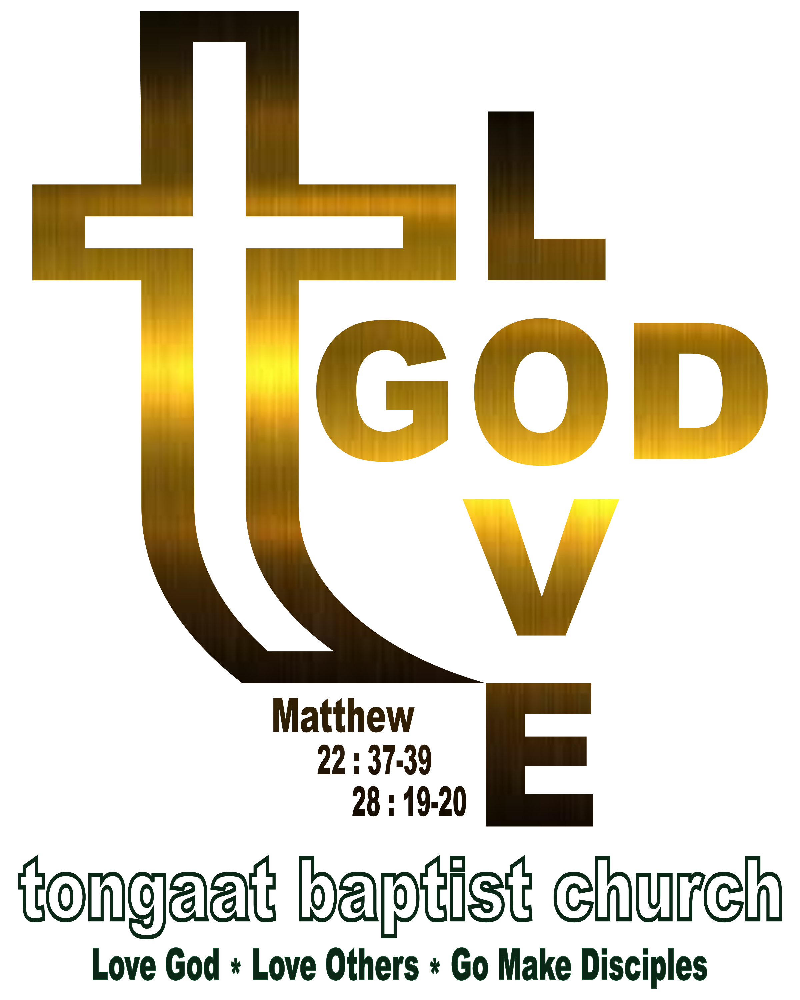

Focusing Forward

Matthew
22:37-39
Jesus replied: “‘Love the Lord your God with all your heart and with all your soul and with all your mind.’ This is the first and greatest commandment. And the second is like it: ‘Love your neighbour as yourself.’
Matthew
28:19-20
Therefore go and make disciples of all nations, baptizing them in the Name of the Father and of the Son and of the Holy Spirit teaching them to obey everything I have commanded you. And surely I am with you always, to the very end of the age.”
Jesus Christ established His Church with a clear plan and a purpose. The Church is not a building, or just a gathering. It is not just an organisation nor an institution. It is a living and a loving organism with Jesus Christ as its Head and the Church as His Body, powered and empowered by the Holy Spirit. The Church should be a Living and a Loving Body that is full of Life.
Therefore, the life of any local church should be a dynamic one that is continuously growing through different settings and seasons, through different ages and stages; Spiritually Growing and Going but at the same time never losing sight of its focus and its function whilst continuously keeping its eyes fixed on the Person of Jesus Christ; Never losing its Love for God; Never losing its focus on God’s Truth; Never losing its way and turning to the ways of the world. Rather, the local church is one that remains focused, fixed and faithful to the Living Christ.
Like many other churches, the Tongaat Baptist Church has, in its 50 years of ministry, come through its fair share of different settings and different seasons, different ages and different stages:
With the commencement of a new decade, and as the Tongaat Baptist Church glances back at the past 50 years, continuing to look up giving thanks to God, the timing is now perfect for the church to focus forward. The timing is also perfect for the renewing of the church’s ministry vision as it prepares to embark on a new chapter in its ministry after 2021 and beyond.
The church’s renewed ministry vision is the culmination of a process that was initiated by the Church’s Leadership in 2017. It commenced with 3 simple, but deep questions: “Who are we as a church?”, “Where did we come from?”, and “Where are we going to as a church?”
This prayerful consideration continued over a 3 year period and concluded in 2020 with one simple, but profound expression based completely on Jesus’ Commands (Matthew 22:37-39) and His Commission (Matthew 28:19-20): Love G.O.D. (Love God; Love Others; Go, make Disciples).
The Tongaat Baptist Church’s renewed ministry vision is not a new or a unique vision. Other churches around the world have also come to build their ministry on these exact same Scripture verses. However, the difference will be in the Tongaat Baptist Church’s approach and in its application. Love G.O.D. is the Tongaat Baptist Church’s renewed Ministry Vision – simple, yet profound. This can be best demonstrated by asking and answering the following questions:
What is the church’s ministry vision?
To Love God; To Love Others; and to Go and Make Disciples
What is the church’s purpose?
To Love God; To Love Others; and to Go and Make Disciples
What is the church’s mission statement?
To Love God; To Love Others; and to Go and Make Disciples
What is the church’s strategy?
To Love God; To Love Others; and to Go and Make Disciples
What is the church’s philosophy?
To Love God; To Love Others; and to Go and Make Disciples
Who are the members of the Tongaat Baptist Church?
We Love God, we Love Others, and we Go and Make Disciples
Love G.O.D. is a Ministry Vision that will apply to every aspect of church life at the Tongaat Baptist Church; from the church’s worship, to its small groups, and to its serving God’s Kingdom. This will be the singular focus of the entire church, with the hope that every member would grow in their Love for God; grow in their Love for Others and that they would Go, and Make Disciples.
The next few years will see the implementation process of Love G.O.D. at the Tongaat Baptist Church. The renewed Ministry Vision is expected to touch every facet of Tongaat Baptist Church life – realigning and transforming every aspect of the church’s ministry focus as the church focuses forward beyond 2021.
Love G.O.D. – The renewed ministry vision that the Tongaat Baptist Church will declare with One Voice and One Vision – to the Glory of God and for the Good of the Church!